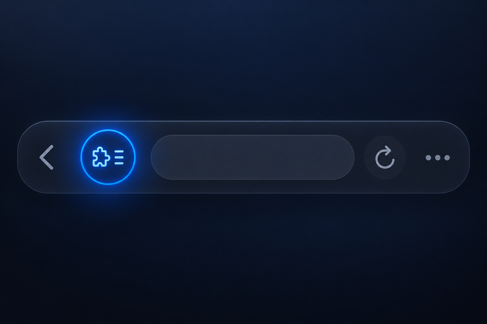
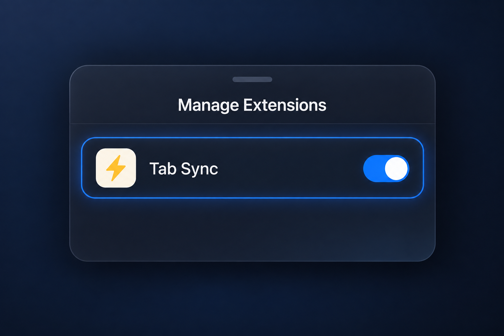
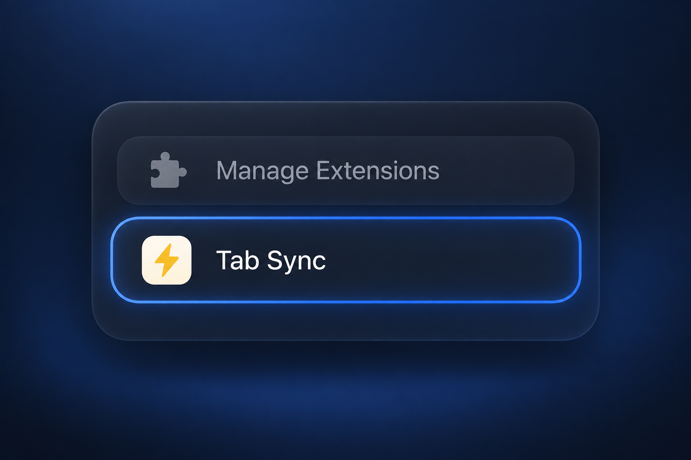

-
1
Open the Page Menu
Open any webpage in Safari, then tap the Page Menu button beside the address bar.

-
2
Turn on Tab Sync
Tap Manage Extensions, switch on Tab Sync, then tap Done.

-
3
Open Tab Sync
Open the Page Menu again and tap Tab Sync. The sign-in page opens in Safari.
